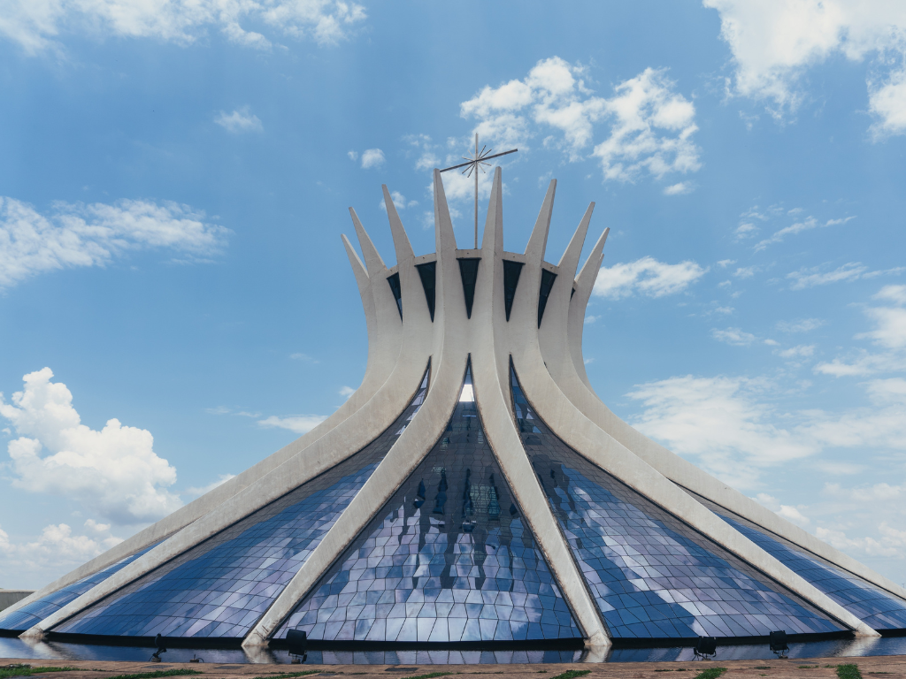

O Distrito Federal, localizado na região Centro-Oeste do Brasil, é uma unidade federativa singular por abrigar a capital do país, Brasília, sede dos três poderes — Executivo, Legislativo e Judiciário. Planejada e inaugurada em 1960, a cidade é conhecida por sua arquitetura moderna e urbanismo inovador, com destaque para as obras de Oscar Niemeyer e o projeto urbanístico de Lúcio Costa. Além de sua importância política, o Distrito Federal possui uma economia baseada principalmente no setor de serviços e na administração pública. A região também conta com áreas naturais do Cerrado, parques e reservas ambientais, que contribuem para a qualidade de vida da população e oferecem opções de lazer e turismo.

Voltar